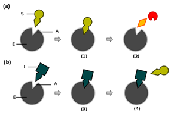
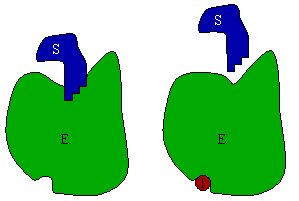

Unit 1: Biochemistry
Activity 4: Food and Enzymes
Content
Enzyme Regulation
Enzyme activity needs to be controlled by the cell. This prevents the unwanted accumulation of substrates and products. One method for controlling enzyme activity is through the allosteric site. The substance that binds to the allosteric site is often a product/substrate. For example, when the cell needs a particular product made, the substrate or a precursor to the substrate can activate the enzyme by binding to the allosteric site and turning the enzyme “on”. The cell can also “turn off” the enzyme by having the product molecule bind to the allosteric site, thus giving the enzyme feedback when there are high concentrations of product. This is called feedback inhibition.
Non-protein substances such as coenzymes (organic molecules) and cofactors (inorganic ions) work with an enzyme to help the enzyme function. Many vitamins from your diet work as coenzymes. Many of the minerals form your diet work as cofactors.
Inhibition Enzymes can be inhibited in several ways. The two general methods of inhibiting an enzyme is through competitive and non-competitive inhibition. In competitive inhibition, another molecule, other than the substrate, competes for the active site of the enzyme. When the substrate concentration increases, more substrate molecules are available to compete for the active site and overcome competitive inhibition. |
 Competitive Inhibition |
 Noncompetitive Inhibition |
In non-competitive inhibition, the inhibitor (shown to the left) fits into another enzyme site other than the active site. In this case the shape of the enzyme is altered. Once the shape is changed, the substrate no longer fits into the active site and the enzyme cannot catalyze the reaction. Adding more substrate will not affect this type of inhibition. The inhibitor molecule may release the allosteric site, making this type of inhibition reversible as in the case of allosteric regulation. However if the inhibitor binds permanently or permanently alters the shape of the enzyme, it is termed non-reversible inhibition. |
 |
Learn more about enzymes, active sites, allosteric regulation, enzyme kinetics, types of inhibition and factors affecting enzyme activity. Biochemical Pathways |
|---|
Portfolio:
Notes help prepare you for tests. Keep all of your notes in your portfolio. Be prepared to submit your portfolio notes and organizers to your teacher for assessment at various times during the course.
Use your portfolio to research more and make detailed notes on enzymes, active sites, allosteric regulation, enzyme kinetics, types of inhibition, and factors affecting enzyme activity.
This is a disclaimer. External Resources will open in a new window. Not responsible for external content.
Unless otherwise indicated, all images in this Activity are from the public domain or are © clipart.com or Microsoft clipart and are used with permission.